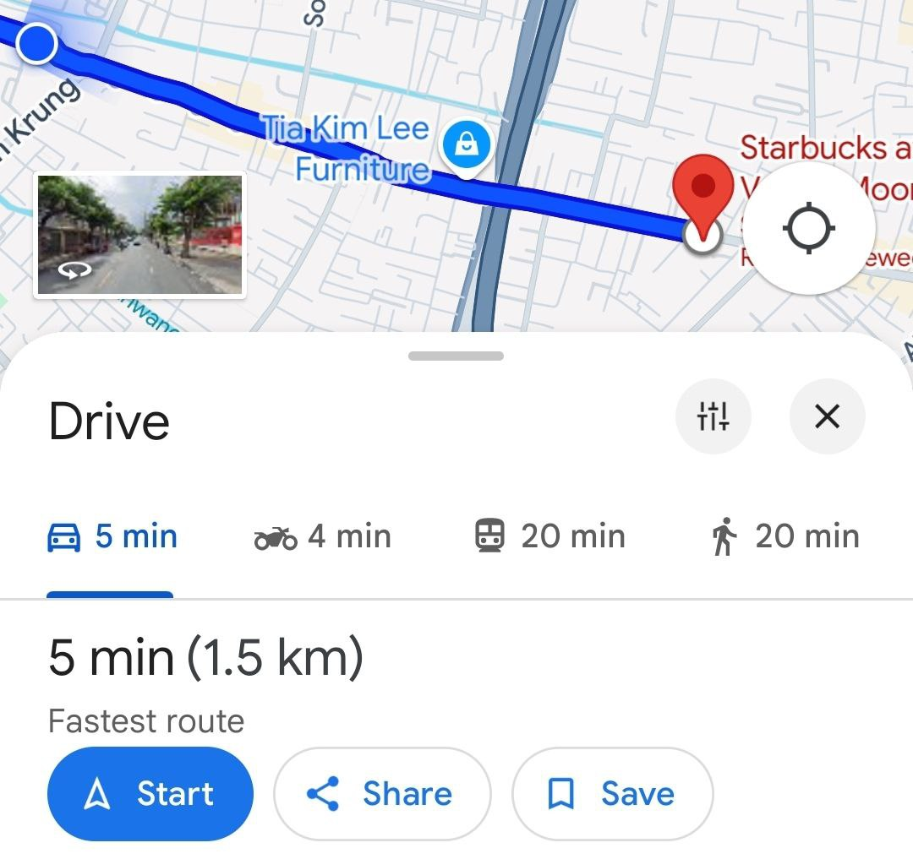

Lesson 1- An introduction to AI
An introduction to AI
Artificial intelligence can be found anywhere, on the Internet or in devices you use, such as YouTube recommendations or a self-braking car.
What is AI?
Artificial intelligence is an algorithm that learns patterns and predicts a certain topic. AI is used with computer science to solve real-world problems.
AI can also be used to help humans with their tasks and that is called augmented reality, such as a navigation system or a text reader for the blind. AI can also be used to mimic human intelligence and that is called artificial intelligence, such as diagnosing illnesses or recognising faces. 
The AI does this by being very good at guessing, this means that the AI has practised many, many times in the past and it learns from what it has done wrong until it minimises the error it has when guessing or predicting.
A brief history
Despite the boom in AI interest in the past years, AI has existed since the 1940s. Where Alan Turing came up with the Turing test to see if machines could “think”. In the Turing test, a person talks to a human and a machine, if the person cannot distinguish between machine and human then the machine has passed the test.
The field of AI officially began in 1956 at a conference at Dartmouth, where scientists first coined the term “artificial intelligence”. They believed every feature of intelligence could be described so specifically that a machine could simulate it. One of the earliest demonstrations of AI is through ELIZA, it simulates the behaviour of a therapist and was created in 1966.
However, there would be a period in AI history named the “AI winter”, this was a period with budget cuts and no breakthrough. This was due to the lack of computational power and data for any AI development.
Later in 1986, this period ended with the resurgence of neural networks and backpropagation in multiple layers. This led to the rise of machine learning which uses these neural networks to learn patterns in data.

Later in the 21st century, with much higher processing power, AI has achieved incredible progress through massive breakthroughs in deep learning and LLMs leading to things like ChatGPT for example.
AI ethics
AI ethics in this case doesn’t just refer to the morals of AI, it also refers to bias and fairness of AI. When AI is used to help humans in their activities, it can influence their decision making which is an issue if the AI isn’t fair. For example, AI could prioritise certain qualities when filtering job applications leading to discrimination. Developing AI systems like COMPAS which detect recidivists has caused controversy as it has identified racial groups as more or less likely to commit a crime.
Another issue is accountability; the legal repercussions of AI crimes are still in a grey area (though there have been major legal changes), an example of this could be, if a self-driving car commits a crime, should the manufacturer or the owner be accountable, or neither?
One other major ethical concern is the data used in AI, when AI is trained it is using massive amounts of data taken from the internet which may lack true consent from people accessing the internet as it is written in a large TOS document. An example would be whether or not big tech companies taking user data to create AI-controlled ads ethical?

Furthermore, ever since generative AI has been popularised there has been a rise in the amount of misinformation or propaganda spread on the internet as well as AI faking as real people, since some laws regarding AI have not been fully clarified, these unethical practices have often unpunished, so it is important to use AI for ethical purposes.
Lastly, a concern amongst many people is using AI to replace workers. Though it may be true AI can replace some human functions, it is a debate whether or not AI could or should be used to replace jobs.
References
- https://www.ibm.com/topics/artificial-intelligence
- https://braidr.ai/augmented-vs-artificial-intelligence-whats-the-difference